Insane plots
Insane holds recipes to plot phylogenetic trees, results and perform aggregating functions. The output will rely in the number and type of arguments you provide.
First, however, we need to load the Plots package
using PlotsInsane plots across all tree types
Simple tree plot
The most basic plot function simply plots the tree:
plot(tree)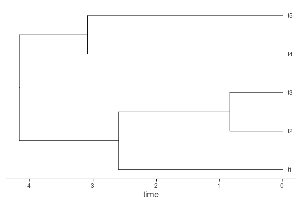
One can reorder the tree according to balance (have one daughter always have the largest number of tips) by using reorder!(tree), which orders in place the tree and helps in visualization.
If one has a tree vector, we could, for example, sample $4$ of them at random and simply plot them together using
ti = rand(tv,4)
p0 = plot(ti[1])
p1 = plot(ti[2])
p2 = plot(ti[3])
p3 = plot(ti[4])
plot(p0, p1, p2, p3)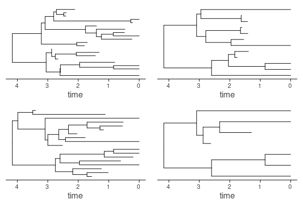
If the tree is of type sT_label or sTf_label, labels will be shown automatically, but you can toggle this off with showlabels = false.
One can also plot the tree radially (as a fan) using
plot(tree, type = :radial)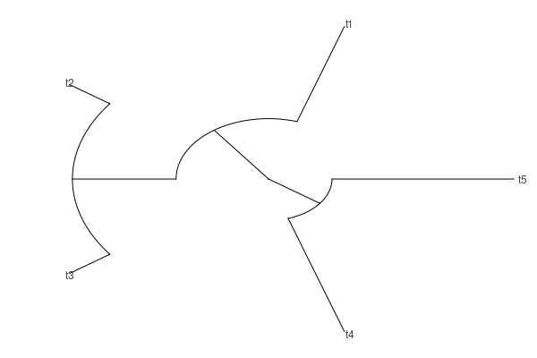
For trees with fossils the fossilization events are shown as default, but one can change this. For instance, one can also add symbols in the plot for speciation and extinction events beside fossilization events. This can be set by the shownodes keyword, which receives a Boolean Tuple of size 3, specifying, if speciation, extinction and fossil events should be shown, respectively. In the same order, with the keyword shapes you specify a vector of Symbols with the shape (e.g., :circle), and, finally the keyword colors, in the same order, specifies the colors for each shape.
plot(tree, shownodes = (true, true, true),
shapes = [:circle, :circle, :square],
shsizes = [3.0, 3.0, 3.0])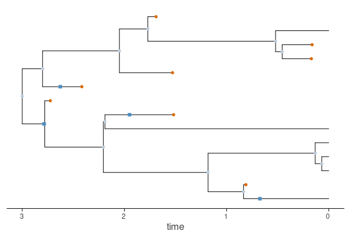
LTT and DTT plots
We can plot the LTT or DTT by using the ltt result (of type Ltt, check (check Basic tree information)) as input:
plot(ltt(tree), linewidth = 2.0)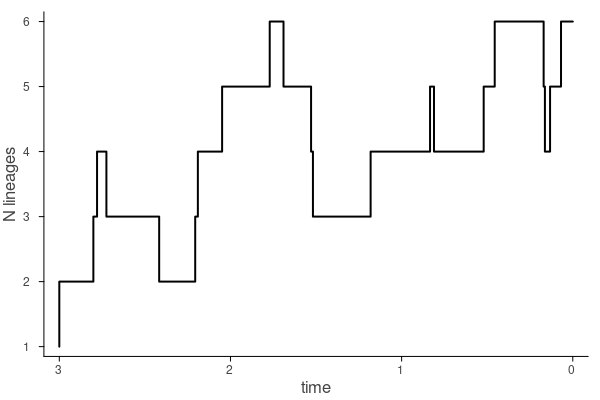
Moreover, if we input a vector of Ltt we will plot each LTT individually, or, better, if we add a decimal number argument, it will use it as sampling frequency through time and return the mean and desired quantiles of lineage or diversity through time using the arguments q0 and q1 (by default q0 = [0.025, 0.975] and q1 = [0.25, 0.75]):
lttv = ltt(tv)
plot(lttv, 0.1)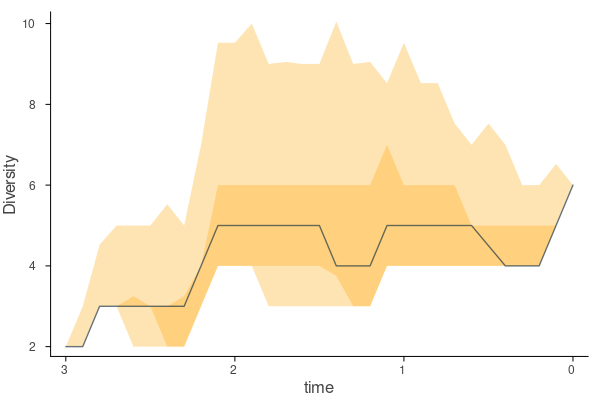
Insane plots for trees with diffusion
These plotting functions are specific to BDD, FBDD or DBM type trees (i.e., of iT or sTxs supertype).
Plot the rates on the tree
To "paint" the tree with the instantaneous lineage-specific rates of speciation $\lambda(t)$, we can use:
plot(tree, birth)
birth, which stands for "birth rates", is a convenience wrapper around exp.(lλ(tree)): it extracts the log-speciation vector from a give iT tree using lλ, and then returns the exponential.
This plotting function also allows to plot the death rates (only where extinction is also a diffusion, i.e., iTbd) using
plot(tree, death)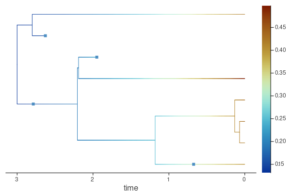 where death, which stands for "death rates" (i.e., extinction) is a wrapper around exp.(lμ(tree)).
In general, this plotting recipe receives a tree and a function that is applied recursively to paint the tree. Thus, we can use any custom made function that extracts information from the tree. Some predefined ones are:
logbirth: log-(speciation) birth rateslogdeath: log-(extinction) death ratesturnover: turnover (extinction/speciation) ratesdiversification: net diversification (speciation - extinction) ratestrait: trait valuesevorate: evolutionary rates $\sigma^2(t)$logevorate: log-evolutionary rates $\sigma^2(t)$
Plot the underlying rates along a tree
To plot how rates evolve across time, that is, to plot the rates in the y axis, one simply changes the argument order:
plot(birth, tree)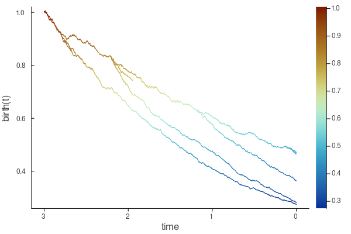
One can paint these rates by another variable, say, extinction rates, using
plot(birth, tree, zf = death)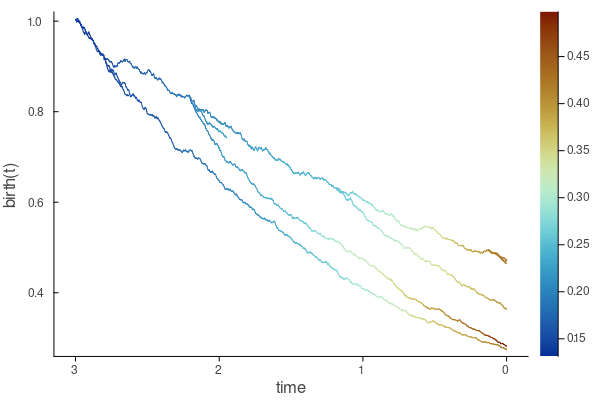
Similarly, one can plot the average for a tree (or other aggregating function as median, geometric mean, etc.) and custom quantiles (as in LTT and DTT plots) for a given tree by adding a decimal number argument representing the sampling frequency through time.
plot(birth, 0.1, tree)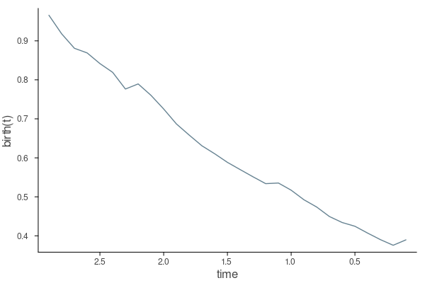
To change the aggregating function, one can modify the function t_af (by default t_af = mean), to the desired one.
Plot the rates across tree vectors
Often one would like to plot the average rates across a series of data augmented trees. This can be done by adding a decimal number argument (and, using a tree vector as input). For instance, to estimate average speciation rates (using wrapping function birth) through time across tree vector tv, every $0.1$ time units, we use:
plot(birth, 0.1, tv)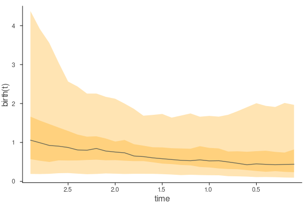
One can choose the function to aggregate rates across lineages for each single tree using af (by default af = mean, and then to aggregate these tree averages using the vaf function (by default vaf = x -> quantile(x, 0.5), that is, the median).